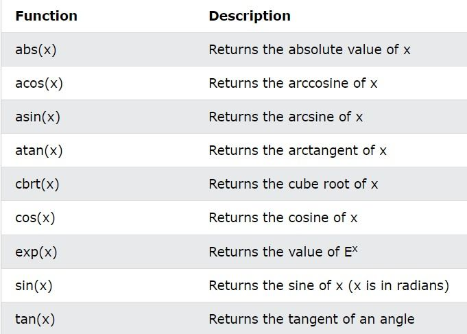

A function is a block of code which only runs when it is called.
- You can pass data, known as parameters, into a function.
- Functions are used to perform certain actions, and they are important for reusing code: Define the code once, and use it many times.
Predefined Functions
main() is a function, which is used to execute codem and printf() is a function; used to output /print text to the screen:
Create a Function:
To create (often referred to as declare) your own function, specify the name of the function, followed by parentheses () and curly brackets {}:
Syntax:
void myFunction() {
//code to be executed
} Example Explained:
- myFunction() is the name of the function
- void means that the function does not have a return value.
- Inside the function (the body), add code that defines what the function should do
Call a Function:
Declared functions are not executed immediately. They are "saved for later use", and will be executed when they are called.
To call a function, write the function's name followed by two parentheses () and a semicolon ;
Example
void myFunction() {
printf("Hello!");
}
int main() {
myFunction();// call the function
return 0;
} //output: "Hello!"Parameters And Arguements:
Information can be passed to functions as a parameter. Parameters act as variables inside the function.
Parameters are specified after the function name, inside the parentheses. You can add as many parameters as you want, just separate them with a comma:
Syntax:
returnType functionName(parameter1, parameter2, parameter3) {
// code to be executed
} The following function that takes a string of characters with name as parameter. When the function is called, we pass along a name, which is used inside the function to print "Hello" and the name of each person.
Example
void myFunction(char name[]) {
printf("Hello %s\n", name);
}
int main() {
myFunction("Liam");
The void keyword, us myFunction("Jenny");
myFunction("Anja");
return 0;
}
// Hello Liam
// Hello Jenny
// Hello AnjaMultiple Parameters:
Inside the function, you can as many parameters as you want:
Example:
void Function(char name[], int age) {
printf("Hello %s. You are %d years old. \n", name, age);
}
int main() {
Function("Liam", 3);
Function("Jenny", 14);
Function("Anja", 30);
}
Output:
//Hello Liam. You are 3 years old.
//Hello Jenny. You are 14 years old.
//Hello Anja. You are 30 years old.Return Values:
The void> keyword, used in the previous examples, indicates that the function should not return a value. If you want the function to return a value, you can use a data type (such as int or float, etc.) instead of void, and use the return keyword inside the function:
Example:
int Function(int x) {
return 5 + x;
}
int main() {
printf("result is : %d",Function(3));
return 0;
}
//outputs 8 (5 + 3)Function Declaration and Definition:
A function consist of two parts:
- Declaration: the function's name, return type, and parameters (if any)
- Defination: the body of the function (code to be executed)
For code optimization, it is recommended to separate the declaration and the definition of the function.
ou will often see C programs that have function declaration above main(), and function definition below main(). This will make the code better organized and easier to read:
void Function(); //Function declaration
// The main method
int main() {
Function(); // call the function
return 0;
}
// Function defination
void Function() {
printf("I just got executed");
}Recursion
Recursion is the technique of making a function call itself. This technique provides a way to break complicated problems down into simple problems which are easier to solve.
recursion may be difficult to understand. The best way to figure out how it works is to experiment with it.
Adding two numbers together is easy to do, but adding a range of numbers is more complicated. In the following example, recursion is used to add range of numbers together by breaking it down into the simple task of adding two numbers:
int sum(int k);
int main() {
int result = sum(10);
printf("%d", result);
return 0;
}
int sum(int k) {
if (k > 0) {
return k + sum(k - 1);
} else {
return 0;
}
} Math Functions:
There is also a list of math functions available, that allows to perform mathematical tasks on numbers.
To use them ,you must include the math.hheader file in your program:
#include <
Square Root:
To find the square root of a number , use the sqrt() function:
printf("%f", sqrt(16)); Round the Number:
The ceil() function rounds a number upwards to its nearest integer, and the floor() method rounds a number downwards to its nearest integer, and returns the result:
Example:
printf("%f", ceil(1.4)); //output 2
printf("%f", floor(1.4)); //output 1Power:
The pow() function returns the value of x to the power of y (xy)
Example:
printf("%f", pow(4, 3));Other Math Functions:
